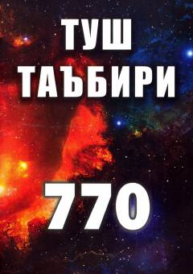

TTMashhur olimlar an'anasiga asoslangan tush tabirlari to'plami.
Ushbu kitobda tushlarni to'g'ri ta'bir qilish sir-asrorlari haqida ma'lumot berilib, Ibn Sirin va Nobulsiy kabi allomalarning asarlaridan foydalanilgan holda turli tushlarning mazmuni tushuntirilgan. Kitobxonga tushdagi ramzlar va ularning hayotdagi ma'nolarini tushunishga yordam beradi.